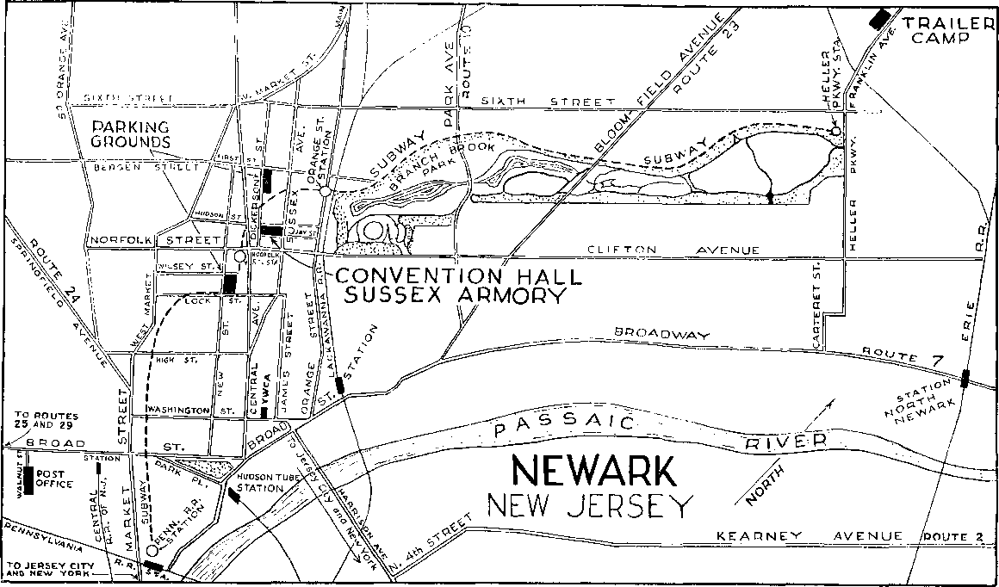

EXT HA Brooklyn, N.Y. September, 193G E X L'RA
Get Ready for Concerted Action 5,000 to 8,000 Publishers Expected
For many years past the publications of the Society have pointed out how Jehovah’s witnesses have faithfully carried on in New Jersey in face of much opposition and persecution on the pari of the Hierarchy. The common people, we dare say, are anxious to learn the truth concerning Jehovah’s purposes but in many places have been hindered in learning this truth because of sinister influence. It is Indeed a joy to those who have taken their stand on the side of the Kingdom to come in convention assembled to hear the refreshing truths by which Jehovah assures His people that they are on the right side and that their course of action is the proper one. Such a convention will be held at the Armory, Sussex Ave., Newark, N. J., on Friday, Saturday and Sunday, October 16, 17 and 18, 1936.
Regardless of threats, coercion and vicious opposition, the faithful have pressed on proclaiming the message of the Kingdom. Will you join them in that state during this convention? The witness work in New Jersey will afford everyone an opportunity to be a publisher, and it may be your privilege to come up against some of this opposition.
The Information booth will be found near the main entrance of the Armory. This booth is for general information as to location of various departments and where found articles may be turned in and inquiry made for lost articles. If you desire any information concerning your territory and its location, inquire at the Service Department.
BOOK ROOM
The Book Room will be at the extreme end of the auditorium, opposite the main entrance. The books will be supplied at company and pioneer rates. The pioneers, however, will have to show their identification cards. Announcement will be made later as to what literature will be used. Combinations will be made up in small packages, so that it will not be necessary for anyone to return books for credit at the close of the convention.
BULLETIN BOARD
This board will be located just inside the main entrance, on the left, and is for telegrams and important notices only. No announcements will be made from the plat
The Watchtoiccr magazine and The Golden Aye have submitted the proof without question that the Roman Catholic Hierarchy is the sin-ister influence behind the movement to crush and destroy the activities of Jehovah's Kingdom. The brethren who have been active in New Jersey have been privileged to go through several years of hard work, and it will be a privilege now for their brethren to join them in this territory to the praise of Jehovah’s name. The area to be covered during the three-day convention takes in a population of more than two million people right where the Roman Catholic Inquisition of America operates at its best, and it will require a goodly number of publishers to thoroughly cover this territory with the Kingdom message and advertise the public lecture by Brother Rutherford on “Armageddon”. Jehovah’s witnesses and Jonadabs who can possibly arrange to be at the convention will be there. There is every reason to believe that 5,000 to 8,000 publishers will be in the field, and the instructions set out elsewhere in this Informant should be considered carefully so that Jehovah’s organization can move into action. And now, onward “For Jehovah and for Gideon 1” form except announcements relative to the convention itself, and these will be made by the chairman.
CAFETERIA
A menu will be provided, showing what foods are available at the Cafeteria. Good wholesome food will be served throughout the convention period. Arrangements are being made so that the pioneers can obtain their meals free. The pioneers must register at the Pioneer booth. The small amount charged other persons for the food will be to cover the cost of their own and that which the pioneers will take. See the program for the time that the Cafeteria is open. Breakfast will be served each morning from 7 to 9, at which time a box lunch will be prepared to take with you in the field. Every person should take this box lunch with him when he gets his breakfast each day.
Please keep the auditorium neat and clean, and throw all waste material into cans provided for that purpose. Do not leave dirt on the floors or chairs. Tickets must be purchased in advance, from the cashier, to obtain food at the Cafeteria.
FIELD SERVICE
Consider very carefully the article in this Informant under the caption “You Will Want to Be in the
On the last day of the convention, Sunday, October 18, at 3 p.m., Eastern Standard Time, by the Lord's grace, Brother Rutherford will deliver his now famous lecture, “Armageddon.” Brother Rutherford has been enjoying many privileges of service given him by the Lord on his trip through Europe. In many of the large cities abroad the public meetings were packed to capacity, the audiences intently interested in "Armageddon”.
This important lecture will be advertised widely, so that the people of good will throughout New Jersey and New York city will have the opportunity of hearing it delivered by him in person. Armageddon, the greatest battle of all time; that’s something people must learn of today. They ask, What is it? Why must it be fought? When will it be fought? and who is involved? The answer to these questions will undoubtedly be appreciated by the au
Advertising the King and Kingdom
There is no greater organization in the world today than that formed by Jehovah. He has instructed His people to preach this gospel of the Kingdom in all the world for a witness, and that, by His grace, they will do. Conventions such as this one at Newark require much advertising, and the Lord’s people appreciate this opportunity of putting forth an extraordinary effort, particularly in an area where more than 2,000,000 people will be informed of the Kingdom.
How to Advertise
All ears coming to the convention at Newark who can arrange it, should prepare large banners which can be mounted on the top of their car, the printing to be painted on sign muslin. Attractive colors should be used, and it should be done neatly. Some might prefer to have tire covers, bumper streamers, anything to attract attention and advertise the lecture. In addition to signs on your
Fight”. Additional points to have in mind: Be sure to work thoroughly the territory that is marked on the map, doing the streets inside the boundaries and the one side of the street marking the boundary. This means you are to witness to all homes, streets, factories, business districts. Phonographs should be used right along in the service work. Names of the interested parties should be taken. If you can make dience. The Armory, having a capacity of 10,000, wo can feel confident will be packed out. Are you coming to the convention at Newark to help advertise this speech and co-operate in advertising the Kingdom interests generally in New Jersey?
If you are coming to the convention in a car, be sure a big sign painted in attractive colors is on the car, so that as long as you are in Ilie New Jersey area people will be informed of the speech
ARMAGEDDON
A LECTURE BY
JUDGE RUTHERFORD In Person
Sunday, October IS, 3 p.m.
Sussex Ave. Armory, Newark, N. J. FREE
This public meeting promises to be a history-making event. Tell everybody you know about it. Have them write their friends in the east. If they know, they will come miles to hoar It. So advertise!
car, there will bo placards provided at the convention. Arrangements are being made for a “sandwich sign” parade through the business sections of Newark. Each one may bring along his phonograph, with several 4J-minute records, to be used in the regular witness work. The sound-car equipment should be brought along, and on both sides of the horn and on tiie covers, both front and hack, special signs can be made and attached. Spot announcements will be prepared for the sound cars, anti these you will get when applying for special sound territory. Handbills will be provided all publishers at the convention, for wide distribution. Every person within an area of fifty miles of Newark ought to know of the public meeting and the convention of Jehovah's witnesses; and, by the Lord's grace, they will. Since 1922 the Lord’s people have, gone forward with the slogan, “Advertise! Advertise! Advertise the King and the Kingdom !” And what a joy has been ours in doing tills work!
the back call yourself while attending the convention, do so; if not, make a special note and turn it in at the Service desk. Write plainly the name and address of the interested party. Then state the nature of the back call, and whether a phonograph should be taken, and what literature they desire. Be sure to invite all interested persons to the public meeting.
(Continued on page 2, column 1)
(Continued, front, page 1, column 4) HOSPITAL
It will be appreciated if all doctors and nurses reporting at tlie Information booth offer their services to aid those who might require hospital attention.
HOUSE-CARS AND SOUND CARS
A trailer camp has been arranged as is noted on the map set out below. It is about three miles from the hall. It is also convenient to subway service, which lias a stop within a few blocks of the auditorium. All house-cars and trailers will be arranged in an orderly position and assigned to a space. Please hold to these positions, as we believe all the room we have will be required. Sound cars can be parked here if necessary. Toilet facilities and water are available at the trailer camp.
IMMERSION
Baptismal services will be held Saturday evening at the YWCA swimming pool, 53 Washington St., near Central Ave. See program for exact hour. All desiring to be immersed must bring their own swimming suit and towel. No garments will be supplied at tlie convention.
MUSIC
Anyone who can play an instrument that can be used in an orchestra might bring it along, and an orchestra can be formed at the convention. Only those who have had experience in playing with orchestras should bring their instruments. Those who have no experience would do well to leave theirs at home.
PARKING AND TRAFFIC
There are two very convenient parking lots which will be free to all of Jehovah’s witnesses. These are marked on the map. Please park your ears in one of these two lots, not on the streets around the Armory. Brethren will be there directing the parking. Observe the traffic rules. Make turns on green light only. No right turns on red.
PIONEERS
Every pioneer is to register at the Pioneer desk at the Service Department, and be given a meal ticket without cost. This meal ticket is also his identification at the Book Room
You Will Want to Be in the Fight
Registration Slips Must Be Turned In on Your Arrival at Convention
In order to carry on a steady, efficient assault in New Jersey territory it will be necessary to be well organized.
The company servant should try to ascertain as soon as possible the number of cars that will be going to the convention. Arrange with the car drivers to have their cars filled, if agreeable and convenient to the driver, so that the registration slips can be made out before leaving for the convention. Be sure the driver has with him his registration slip tilled out before leaving.
Those car drivers going to the convention who do not have a full carload but desire more publishers can have their cars filled at the convention at the Service Department.
Present your registration slip at the Service Department and get your territory. You will be given an envelope that will contain tlie maps of the territory you will work during your stay at the convention. The envelope will also contain daily report slips and the captain’s report slips and convention programs. The captain, who is the driver of the for pioneer rates on literature. It is not transferable. If lost it will not be replaced. Free parking is arranged for trailers and house-cars. Those pioneers coming to the convention and not having accommodations will be able to obtain rooms at a very low rate, and, where possible, some free. If you are a pioneer and want free rooming accommodations, make application at the Pioneer desk. If any pioneers are able to repair cars it would be well to make this fact known at the trailer camp. You might be able to render some assistance to brethren who have had difficulty.
ROOMS
Write to the Watch Tower Convention Headquarters, Rooming Committee, 51 Hadley Ave., Clifton, N.J., car, will lill in the captain's report slip each day. This is to include the report of all publishers in the car, whether company publishers, pioneers or auxiliaries. The publishers will also keep their daily slips and turn them in to their home company servant on their return from the convention, or, in the case of pioneers and auxiliaries, include them in their report to the Society for the month. The car driver will turn in bis report each day on his return to the Armory. This is a service convention. Everyone there will want to participate in the great witness that will be given to the glory and honor of Jehovah’s name.
All those who come by train or bus should register at the service booth immediately on their arrival. Groups of five or more will be made up, and a captain assigned, with territory located somewhere near the convention hall. Be sure to register and have a share in the witness for the Kingdom.
All the brethren who possibly can should try to get to Newark Thursday night or early Friday morning. There is much work to be done during these three days in the interest of the Kingdom.
for your rooming accommodations.
How many rooms do you want?
How many in each room?
Single or double beds?
Are you white or colored?
How much does each person expect to pay per night?
How many nights will you be there?
When do you expect to arrive?
Those who have accommodations reserved can go to their rooms first, and then fo the Armory and get their territory. If you do not make your arrangements in advance for room accommodations, then go to the Armory first and get your territory assignment, and then get your room accommodations. Prices of rooms we have listed now are as follows: In private homes, per
Come prepared to serve effectively.
Be thoroughly acquainted with the ■‘Order of Trial”.
Check these off one by one as you arrive:
1. File registration slip at Service Department.
a. You will receive convention programs with your territory assignment. Give a copy to each of your publishers.
2. Get your territory.
a. If you have a sound-car equipment, mention this at the time you are getting your territory. You will be given a special assignment.
3. Get your room assignment.
4. Get a bite to eat at the Cafeteria.
5. Get literature at the Book Room.
6. Go to your rooming accommodations and get settled.
7. Take your publishers to your territory, and work until such time as is necessary to return for the meetings listed on program. Have your phonograph with you, and use it in your witness work.
8. During the convention period breakfast will be served at the Armory from 7 to 9.
9. Get a box lunch of wholesome food at the Cafeteria. Take this witli you into the field. Put in just as many hours as you can.
10. Car drivers, report your car’s activities dally. Publishers should make out daily report slips, and keep these, and turn them in to their home company servant after the convention. Pioneers and auxiliaries include this in their regular monthly report.
person, rates range from 75c to $1.00. In hotels, per person, $1.00 to $1.50. We hope that in obtaining accommodations you will do it through the rooming committee, either in advance or when you arrive at the Armory. The rooming committee will be able to save you considerable in your room accommodations. Y’ou will avoid much confusion by obtaining your accommodations through the Society's arrangements rather than going to hotels or rooming houses and trying to obtain your own accommodations.
BRING THIS "INFORMANT" WITH YOU TO THE CONVENTION
